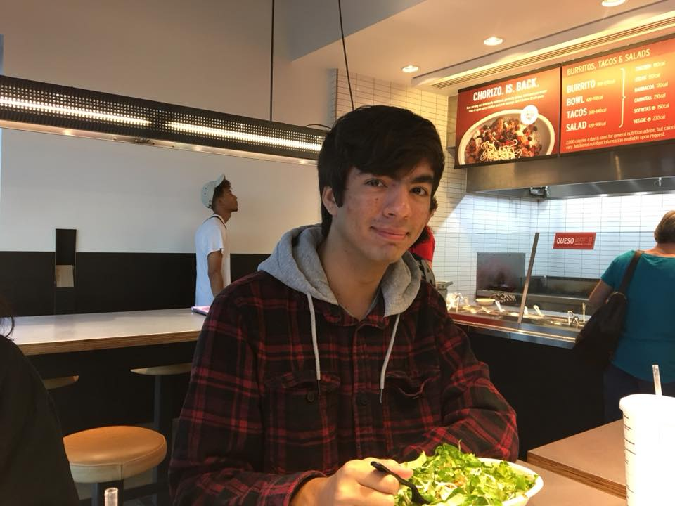
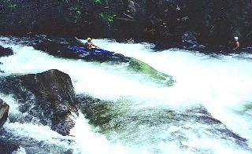

Devin Maitra's homepage

Hello! My name is Devin Maitra and this page is about me!

| Last summer |
| The picture on the right is the Nantahalla river located in North Carolina! Me and my grandfather traveled here in late July. We practiced riding down the Chatahoochee
River in a tandeom canoe for a few days until he thought I was ready for the Nantahalla. It was a super scary river to go down since I sat in the front. I was mostly
backpaddling (pushing my paddle against the flow of the river in order to slow us down from capsizing) and by the end of it I could barely feel my arms! But it was
a lot of fun and I liked hanging out with my grandpa. he's 70 years old and went through chemotherapy but he's still way more athletic than I am some how. He's alwasy
wanted to do outdoor stuff with me so I'm glad I could finally grant his wish! But that trip was so exhausting that I think I'm good for another year. |
| What am I going to do with my life? |
I am thinking about getting a job at a tech company or any company that has to do with computers, but I have considered multiple other types of
jobs. I have never 100% committed to one career path, but I am going to college just so that I do have a safety net if I don't decide or pursue something else entirely. I
don't think anybody's dream job is working in an office, but the other careers I've pondered are a little complicated to accomplish without a lot of luck. For example, I wanted to be a
clinical psychologist, but I would have to stay in school for much longer than I want to and wait for a job opening to become a therapist, which is pretty rare around where I live
atleast. Another more crazier job I wanted was to be a professional gambler. It would be fun to not have a boss and just play cards all day for money, but I should probably worry
about beating the old people at my local poker tournament before I think about Vegas. |
|
About me
|
Hello! Thank you for coming to my page! My name is Devin and I am a sophomore at University of Georgia. I am majoring in MIS and would like to work for
a life sucking important and fun company eventually! But if that doesn't work out then I can always stick to poker so I can at least
feell ike I am making money :D My favorite hobbies are video games, card magic, poker, and watching anime. And of course I love going out with my friends too (as long as
I have enough money). I think computer science can be pretty fun as long as it isn't too hard. I took computer science 1301 last semester when I was still a computer
science major and it was very difficult, but If I had taken this class first, I think it would have gone a lot better. Thank you for reading about me, and I hope you
enjoy the rest of my page.
Happy Thanksgiving!
|
| This is my current contact information: |
| dmaitra1234@gmail.com |
| https://www.w3schools.com/ is where I learned how to make most of this page.
|